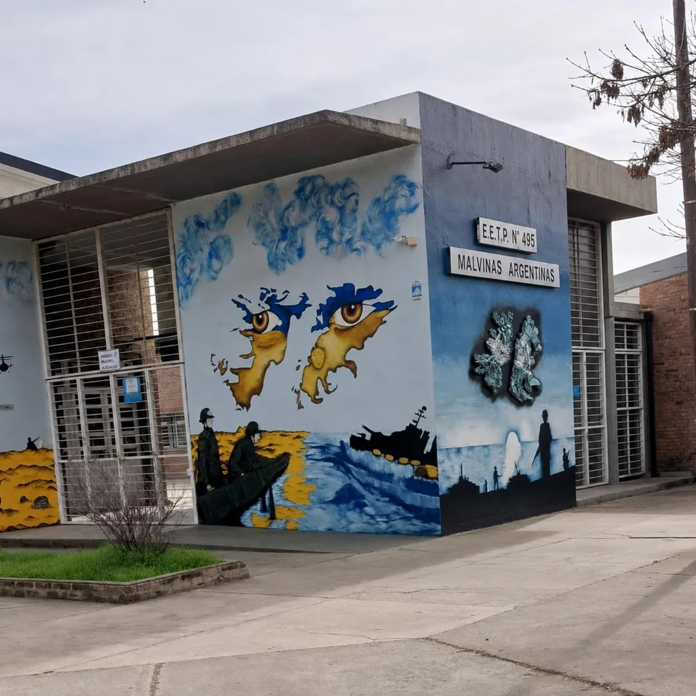

Laboratorios
Tecnología, computadoras y aprendizaje práctico basado en proyectos (ABP).
Desde 2005, docentes, estudiantes, familias y la comunidad
construyen la historia
de la E.E.T.P. N° 495 “Malvinas
Argentinas”.
Recorré los momentos que marcaron el crecimiento de nuestra escuela y su comunidad.

La Escuela de Educación Técnico Profesional N° 495 "Malvinas
Argentinas" nació el 2 de mayo de 2005 como anexo de la
E.E.T. N° 460 "Guillermo Lehmann", con el propósito de
ampliar la oferta de educación para la ciudad de Rafaela y la
región, y así brindar una nueva oportunidad de formación técnica a
jóvenes y adolescentes. Desde sus comienzos, la institución asumió
el desafío de construir una identidad propia, basada en la calidad
educativa, el compromiso y el trabajo colaborativo .
Los primeros años estuvieron marcados por el esfuerzo de docentes, estudiantes, familias y colaboradores que, aún con recursos limitados y en espacios adaptados, hicieron posible el crecimiento de la escuela. Se impulsaron proyectos científicos y tecnológicos, se fortalecieron los talleres, se incorporó equipamiento, se promovió la participación en ferias de ciencias y actividades educativas, y se consolidó así, una comunidad comprometida con la formación técnica y humana de sus estudiantes.
El 10 de agosto de 2008 obtuvo oficialmente el nombre de Escuela de Educación Técnico Profesional N° 495 "Malvinas Argentinas" , iniciando una nueva etapa de crecimiento y desarrollo. Finalmente, el 12 de marzo de 2013 quedó inaugurado el edificio actual, un logro histórico que representa el esfuerzo, la perseverancia y el compromiso de toda la comunidad educativa, valores que continúan guiando el presente y el futuro de nuestra escuela.
Una mirada a las instalaciones mediante fotografías que ya forman parte de la web institucional.
Tecnología, computadoras y aprendizaje práctico basado en proyectos (ABP).

Espacios donde se aprende haciendo.

Encuentros, intercambio y construcción de conocimientos.
Conocé a quienes, desde distintos roles, construyen día a día la identidad de la E.E.T.P. N° 495.
Ingeniera Romina Indelman
Directora
Licenciada Claudia Andrea Giorgis
Vicedirectora
Nuestro equipo docente acompaña la formación integral de los estudiantes, combinando conocimientos de formación general, científica y tecnológica con experiencias prácticas en talleres y espacios de formación técnica específica.
Un compromiso compartido con la educación técnica pública de calidad.
Estudiantes, familias, docentes y personal de la escuela construyen juntos una comunidad comprometida con el aprendizaje, la participación y la educación técnica pública.